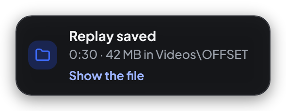
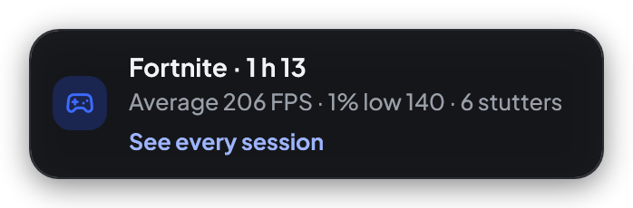
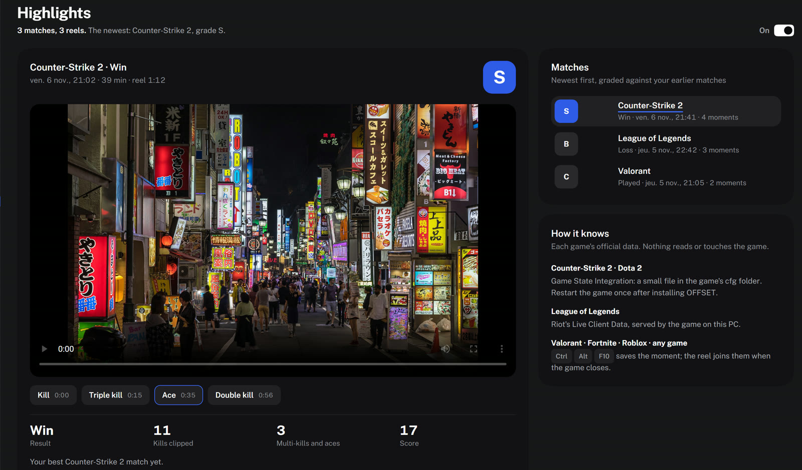
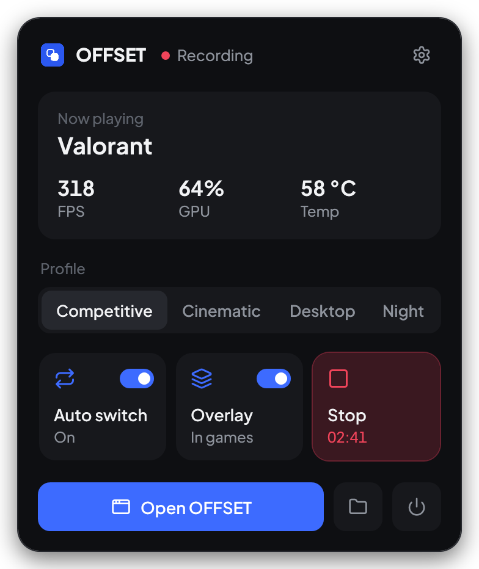
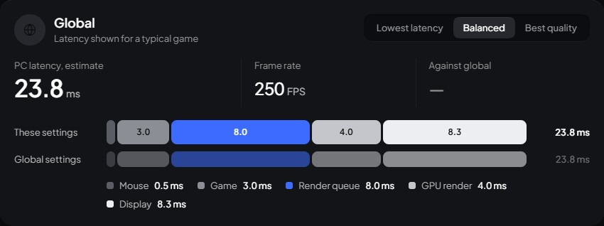
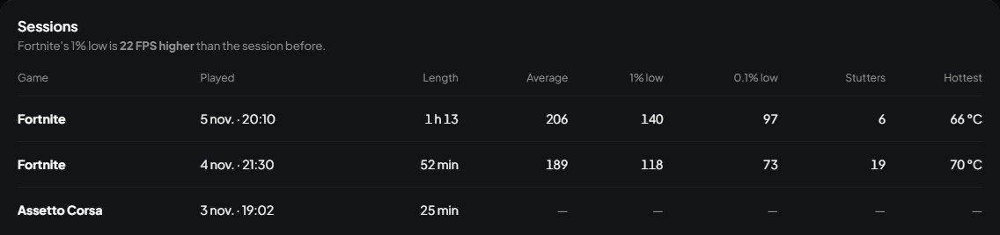

Tune every game.
Keep every play.
OFFSET is a free Windows app that replaces the NVIDIA Control Panel: profiles that switch with your games, real FPS, an overlay and instant replay.
OFFSET in numbers
- to save the last 30 seconds
- 2s
- games known by name
- 70+
- launchers it reads your games from
- 9
- bytes injected into your game
- 0
It knows your game the second it starts


Its profile goes on, the overlay comes up and instant replay starts. Seventy games are known by name, and every game installed through these launchers is found by itself:


Numbers over any game
A small click-through box above the game in front: FPS, frame time, GPU load, temperature and a live frame-time line where every stutter shows as a red spike. Nothing is injected into the game, so anti-cheats see nothing.
Clipped, then coached
Play. Every kill, multi-kill and ace is saved on its own, and when the match ends OFFSET cuts them into one reel, graded against your last games. Then Claude, the AI coach, tells you what to work on.
- An AI coach after every match. It reads your kills, deaths and their timing, and tells you the three things to fix next match. Ask it anything about the game you just played.
- Auto highlights. CS2, Dota 2 and League from their official live data; Valorant, Fortnite and Roblox fights by ear. Nothing reads or touches the game.
- A menu over the game. Ctrl Alt Z: replay, crosshair, Game Mode and your last clip, without leaving the match.
- Made for your feed. One click turns a reel vertical for TikTok, Shorts and Reels, with every kill labelled.

Everything the NVIDIA panel should have been



Press it. It's saved.
These are OFFSET's hotkeys. They work over any game; try them here, on the keys or on your keyboard.
What your graphics card gets
| Feature | Works on | In OFFSET | Hotkey |
|---|---|---|---|
| Any graphics card | |||
| Resolution and refresh | NVIDIA, AMD, Intel | Displays | Ctrl Alt R |
| Next refresh rate | NVIDIA, AMD, Intel | Displays | Ctrl Alt H |
| Brightness, contrast, gamma | NVIDIA, AMD, Intel | Colour | — |
| Night shift | NVIDIA, AMD, Intel | Colour | Ctrl Alt N |
| Profiles and game switching | NVIDIA, AMD, Intel | Profiles | — |
| In-game overlay | NVIDIA, AMD, Intel | Monitoring | Alt R |
| Recording | NVIDIA, AMD, Intel | Tray panel | Ctrl Alt F9 |
| Instant replay | NVIDIA, AMD, Intel | Settings | Ctrl Alt F10 |
| Screenshot | NVIDIA, AMD, Intel | Videos\OFFSET | Ctrl Alt F11 |
| Real FPS and sessions | NVIDIA, AMD, Intel | Monitoring | — |
| NVIDIA cards | |||
| Digital vibrance | GeForce, RTX | Colour | Ctrl Alt ↑ ↓ |
| Custom resolutions | GeForce, RTX | Resolutions | — |
| 3D settings per game | GeForce, RTX | 3D settings | — |
| Temperature, clocks and fan | GeForce, RTX | Monitoring | — |
Before you install
Is OFFSET free?
Yes. There are no ads and nothing to buy. An account is optional and only keeps your profiles in sync between PCs.
Can an anti-cheat flag it?
OFFSET never touches a game. The overlay is its own window above the game, FPS comes from the frame events Windows already keeps, and recording copies the screen. Nothing is injected.
Do I need an NVIDIA card?
No. Displays, colour, profiles, the overlay, FPS, recording and instant replay work on any card. Digital vibrance, custom resolutions and the 3D settings need an NVIDIA card and its driver.
Will it cost me frames?
Recording and replay run on your card's own video encoder (NVENC, AMF or Quick Sync), not the processor. The overlay redraws once a second, and FPS is read from Windows, not from inside the game.
Why does Windows warn me about the installer?
OFFSET is not code-signed yet, so Windows SmartScreen says it protected your PC. Click More info, then Run anyway. The installer comes straight from OFFSET's releases on GitHub.
How does it update?
Once a day, never during a game, OFFSET checks GitHub, downloads the new version in the background and installs it the next time it starts. Settings, profiles and recordings stay.